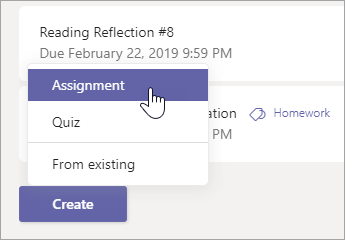
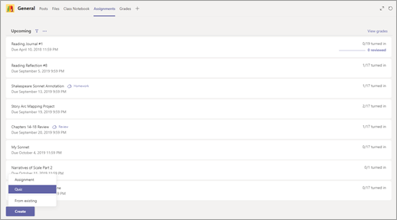
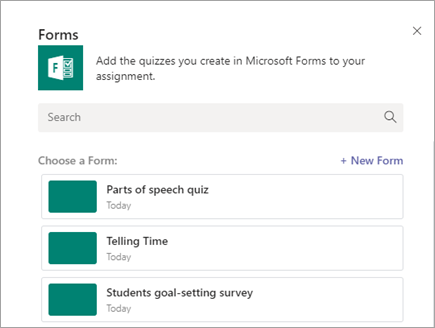
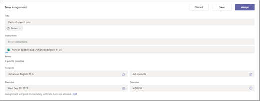

Microsoft Teams este aplicația absolută de mesagerie pentru organizația dumneavoastră – un spațiu de lucru pentru colaborare și comunicare în timp real, pentru întâlniri, pentru partajări de fișiere și aplicații și chiar și pentru emotigrame ocazionale! Într-un singur loc, la vedere și disponibile pentru toți.
Acceseaza platforma aici.
Pasul 1:
Navigați la canalul general din sala de clasă dorită, apoi selectați Atribuiri.
Pasul 2:
Selectați Creare> Atribuire.
Notă: Selectați fila Expandare (diagonală, săgeată dublă) pentru a intra în modul ecran complet

Pasul 3:
Introduceți un titlu pentru această misiune - este necesar.
Pasul 4:
Furnizați mai multe informații pentru misiune.
Mai jos veti gasi videoclipul cu pasii pentru a posta un asigment elevilor dvs.
Pasul 1:
În Microsoft Teams, selectați echipa unei clase în care doriți să distribuiți testul.
Pasul 2
Pe canalul General, selectați fila Teme pentru acasă. Selectați săgeata pentru meniul derulant Creați, apoi selectați Test nou.

Pasul 3:
Creați un test nou sau selectați unul existent. Utilizați bara de căutare dacă nu vedeți imediat testul pe care îl căutați.
Notă: Dacă selectați + test nou, se va deschide o fereastră nouă de browser web pe dispozitivul dvs. Creați-vă testul în Forms, apoi reveniți la Echipe. Noul test va fi acum disponibil pentru a-l selecta și a-i atribui elevilor.

Pasul 4:
După ce selectați testul dorit, acesta va apărea în atribuire sub resurse. Introduceți restul de setări dorite pentru tema respectivă, apoi selectați Alocati.

Mai jos veti gasi videoclipul cu pasii pentru a posta un test elevilor dvs.
Întâlniri programate
Există trei modalități diferite de a accesa opțiunile întâlnirii pentru o întâlnire programată:
În teams, accesați calendarul Butonul Întâlniri , selectați o întâlnire, apoi Opțiuni de întâlnire.
Într-o invitație la întâlnire, selectați Opțiuni de întâlnire.
În timpul unei întâlniri, selectați Afișați participanții Pictograma Afișați participanții în controalele întâlnirii. Apoi, deasupra listei de participanți, alegeți Gestionare permisiuni Pictograma gestionare participanți din Microsoft teams .
Întâlniri instantanee
După ce ați început o întâlnire, selectând întâlnire acum Butonul întâlniți-vă acum (fie de pe un canal, fie din calendar):
Alegeți Afișați participanții Pictograma Afișați participanții în controalele întâlnirii. Veți vedea o listă cu toate persoanele din întâlnire.
Deasupra listei, selectați Gestionare permisiuni Pictograma gestionare participanți din Microsoft teams pentru a merge la opțiunile de întâlnire.